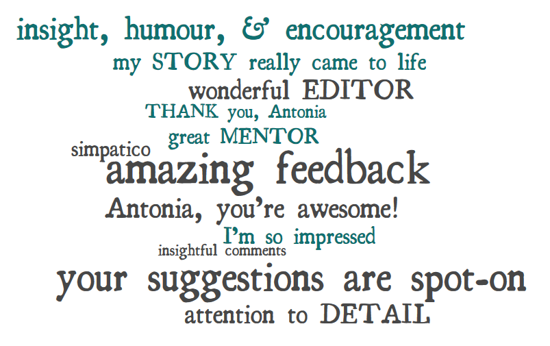

Client Reviews
What they’re saying about me
The people who hire me come from many different fields, but they have two things in common: they take communicating seriously, and they respect their readers.
All my clients appreciate my help in presenting their material most effectively. Here’s what a few of them have to say about my work.
A health organization with a report to distribute at a conference
“Antonia did a stellar job on correcting the English of a very complex research paper, making it much more readable. I was particularly impressed by how she tightened the often unwieldy language – and even corrected typos in several foreign languages!”
– Hema Zbogar, Centre for Addiction and Mental Health
A best-selling writer with a book about wine
“In a category of her own is Antonia Morton, who I affectionately call my personal word trainer. Antonia has read almost everything I’ve ever written professionally, buffing and polishing it before the world saw it.”
– Natalie MacLean, author of Red, White and Drunk All Over and Unquenchable
A government department with a report to be rewritten in Plain Language
“I was highly impressed by Antonia’s ability to rewrite an impenetrable document. She untangled convoluted sentences, cut repetition, replaced long words with short ones, activated the passives, and made a difficult piece of text much easier to read.”
– Terry Flanagan, Consult Ink
A professional organization with a website relaunch
“Antonia’s experience was a great help to us. Her approach was very reader-friendly; and she posed the questions we needed, to make sure our information was as clear as possible.”
– Jennifer Dawe, Association of Consulting Engineering Companies
A major publisher with a non-fiction book to be proofread
“This was tremendously helpful. You made some great saves, and I found your corrections and notes spot-on. It was great to work with you – thanks for catching all those picky little details!”
– Emma McKay, ECW Press
A marketing company with a manual to prepare for a major client
“The calibre of Antonia’s work is superb – and I very much enjoyed working with her.”
– Ken Anderson, Delta Media
A glossy magazine with a feature story by an inexperienced writer
“Antonia has the scrupulous eye and keen sensibility essential to a first-rate copy editor. We call her our ’word goddess.‘ She truly works wonders, and has a fast turnaround time as well.”
– Sarah Brown, Senior Editor, Ottawa Magazine
A financial guru with a newsletter for his clients
“I can dash off an article in an hour, but I really don’t want to spend time cleaning it up. Antonia takes the task off my hands, doing a way better job than I ever could. That makes me more productive.”
– Alan MacDonald, investment advisor
A communication professional with a small website to launch
“Antonia’s work is exceptional. It’s worth many times more than she charges. Her power of thought, her way with words, and her tireless efforts are all truly impressive.”
– Hubert Weinfurter, marketing consultant
An educational group with a PowerPoint presentation
“Antonia is a terrific editor. She’s extremely accurate, and has the wonderful knack of being able to say the same thing in fewer – and better – words.”
– Anne Taylor, co-director, Media Awareness Network
A consultant with a technical manual for an overseas NGO
“My draft manual was long, and it needed a good edit before a tight deadline. Antonia worked hard to produce a clear, concise, and well-presented document. It looked great, and I was able to submit it on time.”
– John Brooks, Anjo Consulting
A filmmaker and MA student with a thesis to submit
“I’m so glad I found you – you’re very professional! The edit of my paper looks really great, and I’ve made a ton of changes in response to all your comments.”
– Irina Sedunova, Journalism, UBC